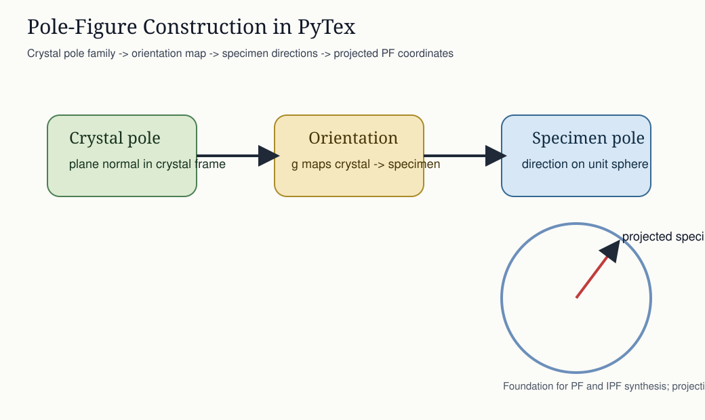
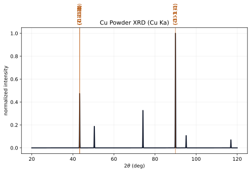
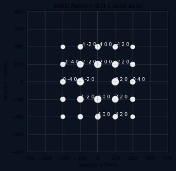
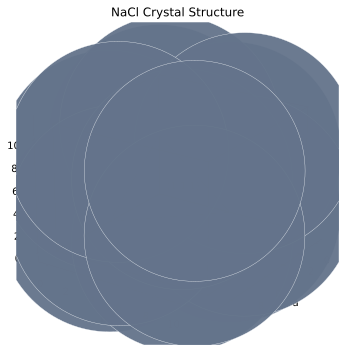

Technical Glossary And Symbols¶
This page is the user-facing glossary and symbol guide for PyTex.
It exists to keep terminology, notation, and navigation stable across the documentation system. When a workflow or theory page uses one of these terms or symbols, it should mean the same thing everywhere in the repo.
Why This Page Exists¶
to define major technical terms once
to fix the main mathematical symbols used across the docs
to make navigation easier when a page depends on concepts explained elsewhere
For the standards-facing policy behind this page, see docs/standards/terminology_and_symbol_registry.md.
Core Geometry And Frame Terms¶
Reference Frame¶
A named, domain-typed coordinate frame such as crystal, specimen, map, detector, laboratory, or reciprocal.
See also: Reference Frames And Orientation Conventions, Core Model.

Crystal Frame¶
The direct-lattice crystallographic frame attached to the phase and used for crystal directions, planes, and structure semantics.
Reciprocal Frame¶
The reciprocal-lattice frame dual to the crystal frame under the PyTex normalization rule ( \mathbf{a}^{*}_i \cdot \mathbf{a}j = \delta{ij} ).
Detector Frame¶
The frame in which detector coordinates such as (u) and (v) live for diffraction geometry and SAED plotting.
See also: Diffraction: Geometry And Bragg Rings, SAED Generation.
Orientation And Texture Terms¶
Rotation¶
A geometric active rotation acting on vectors:
$$ \mathbf{v}’ = \mathbf{R}\mathbf{v}. $$
See also: Orientation And Texture.
Orientation¶
A crystal-to-specimen mapping that wraps a rotation together with explicit frame and symmetry meaning.
Pole Figure¶
A distribution of crystal directions or plane normals expressed relative to specimen directions.

See also: Texture: ODF Evaluation And Pole-Figure Inversion, Plotting Semantic Primitives.
Inverse Pole Figure¶
A distribution of specimen directions expressed in crystal coordinates, commonly reduced into a symmetry-defined sector.
ODF¶
Orientation distribution function over orientation space. In the current PyTex implementation, the stable user-facing surface is a discrete kernel-supported ODF rather than a full harmonic expansion.
See also: Orientation And Texture, Texture: ODF Evaluation And Pole-Figure Inversion.
Diffraction Terms¶
Miller Indices ((hkl))¶
Integer triplet identifying a crystal plane or reciprocal-lattice direction in three-index notation.
Reciprocal-Lattice Vector (\mathbf{g}_{hkl})¶
The reciprocal-space vector associated with Miller indices ((hkl)):
$$ \mathbf{g}_{hkl} = h\mathbf{a}^{} + k\mathbf{b}^{} + l\mathbf{c}^{*}. $$
Interplanar Spacing (d_{hkl})¶
The spacing associated with the ((hkl)) reflection family:
$$ d_{hkl} = \frac{1}{\lVert \mathbf{g}_{hkl} \rVert}. $$
Powder Pattern¶
A broadened XRD spectrum built from discrete reflections and sampled over a (2\theta) grid.

See also: Powder XRD Generation.
Zone Axis¶
A direct-space crystallographic direction defining an electron-diffraction viewing or incidence condition.
SAED Pattern¶
A selected-area electron diffraction spot map rendered in detector coordinates from reciprocal-lattice reflections that satisfy a zone-axis condition.

See also: SAED Generation, Diffraction: Reciprocal Space And Kinematic Spots.
Visualization Terms¶
Crystal Scene¶
A reusable geometry bundle containing atoms, bonds, lattice edges, and plane overlays for 3D rendering.
Plane Overlay¶
A rendered polygon representing the intersection of a crystallographic plane ((hkl)) with a repeated unit-cell or supercell box.
View Direction¶
A crystallographic direction used to align the 3D camera without changing the underlying crystal geometry.

See also: 3D Crystal Visualization.
Core Symbols¶
Symbol |
Meaning |
|---|---|
(\mathbf{v}) |
Generic vector in an explicitly named frame |
(\mathbf{R}) |
Rotation matrix |
(q) |
Unit quaternion |
((\phi_1, \Phi, \phi_2)) |
Bunge Euler angles |
(\mathbf{a}, \mathbf{b}, \mathbf{c}) |
Direct-lattice basis vectors |
(\mathbf{a}^{}, \mathbf{b}^{}, \mathbf{c}^{*}) |
Reciprocal-lattice basis vectors |
(\mathbf{g}_{hkl}) |
Reciprocal-lattice vector |
(d_{hkl}) |
Interplanar spacing |
(\theta) |
Bragg half-angle |
(2\theta) |
Powder-diffraction scattering angle |
(F_{hkl}) |
Structure-factor quantity or current proxy |
(u, v) |
Detector-plane coordinates |
(\hat{\mathbf{z}}) |
Unit zone-axis direction |
References¶
Normative¶
../../standards/terminology_and_symbol_registry.md../../standards/notation_and_conventions.md
Informative¶
../../architecture/canonical_data_model.md